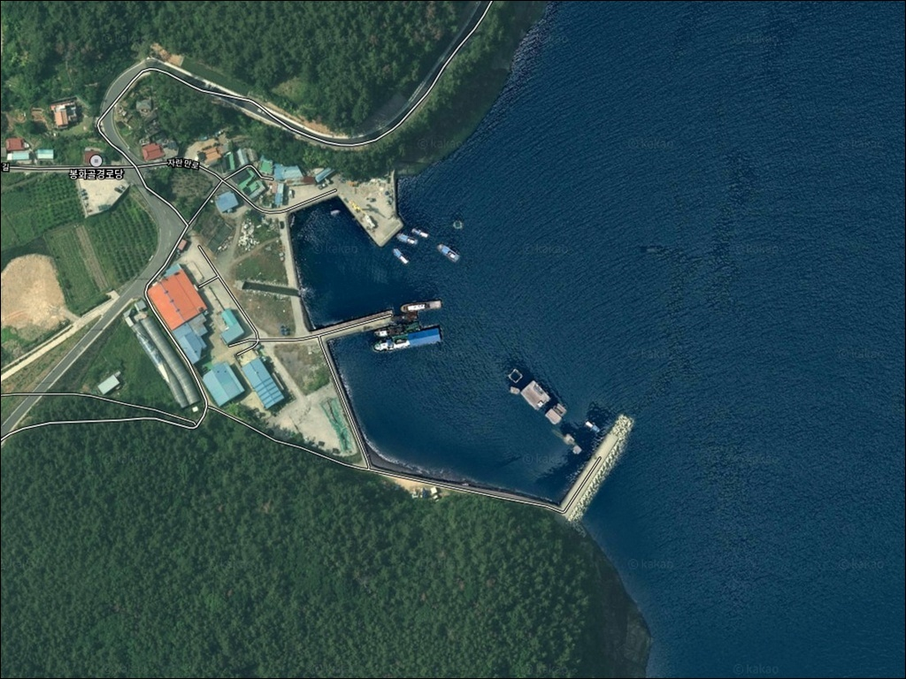
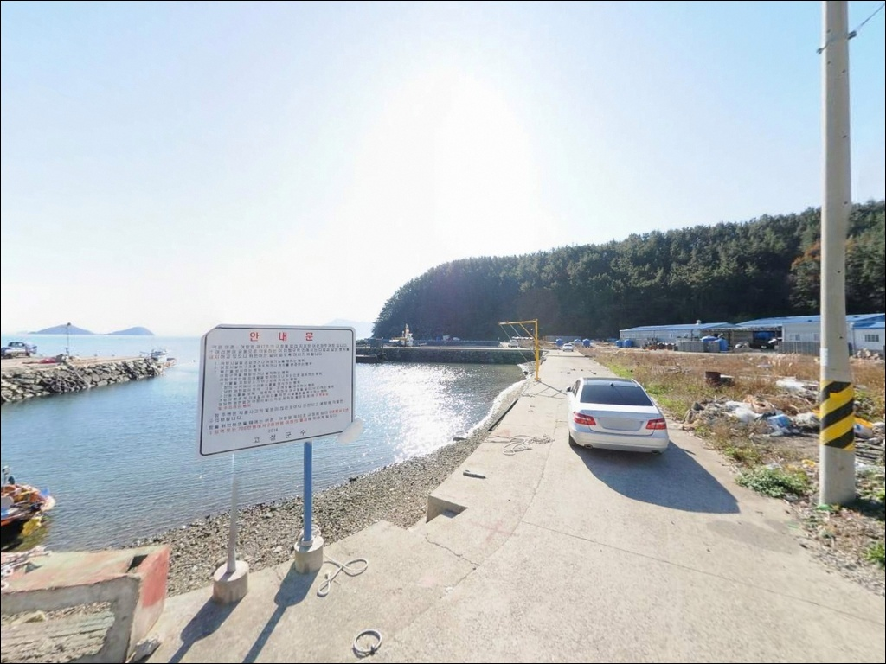
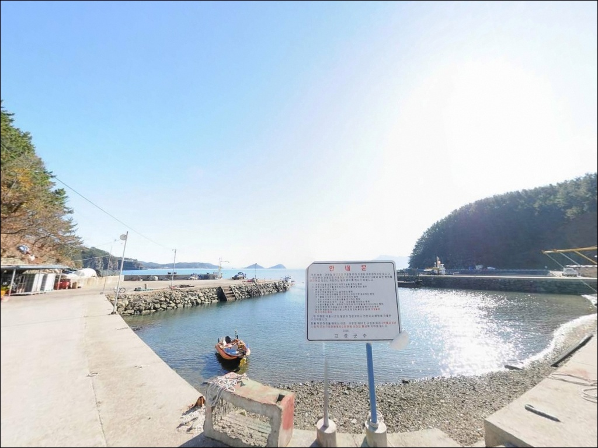
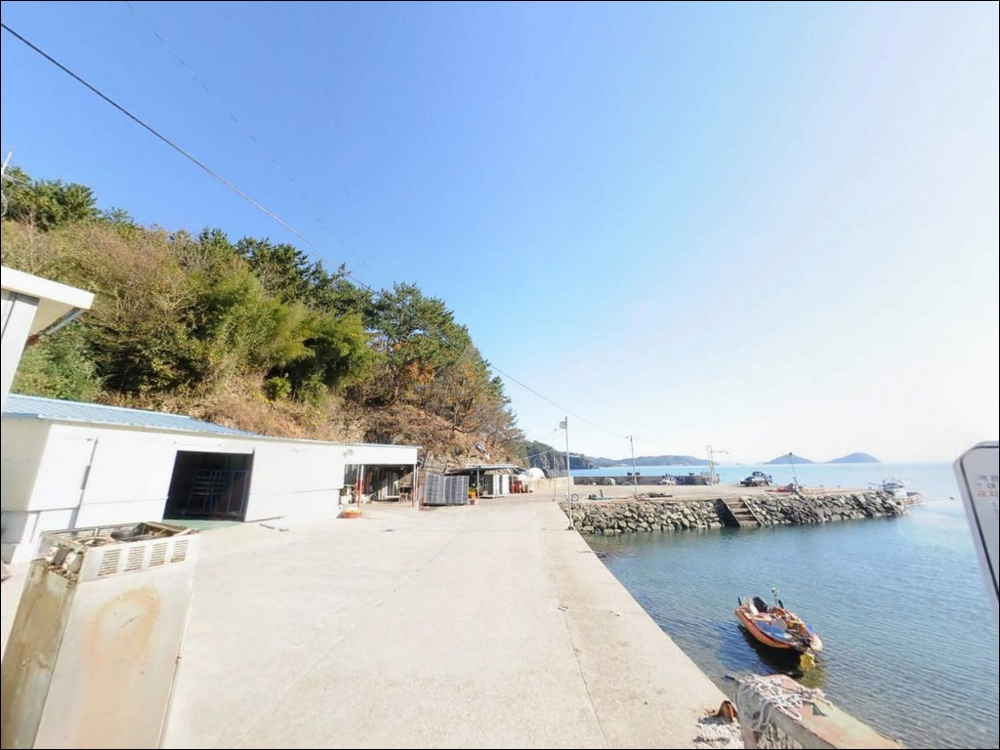
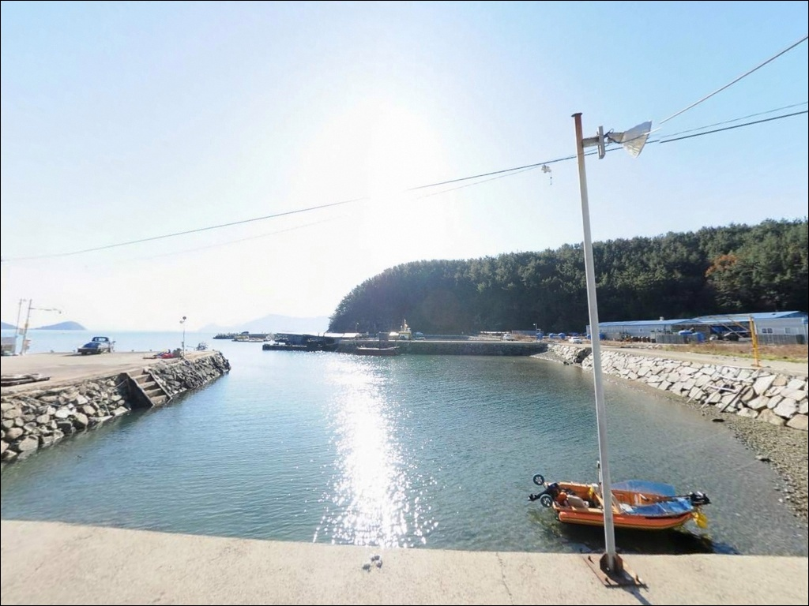
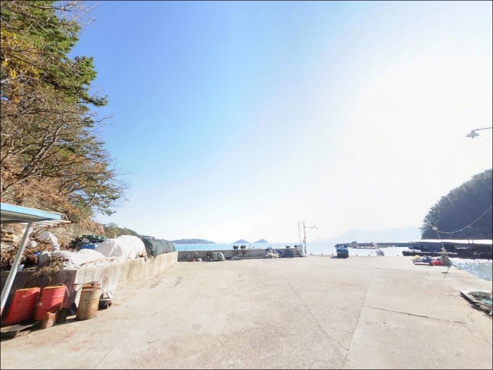
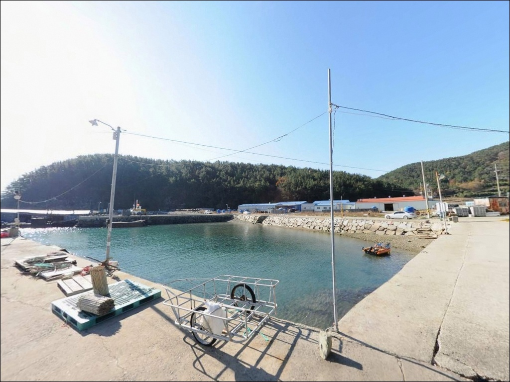
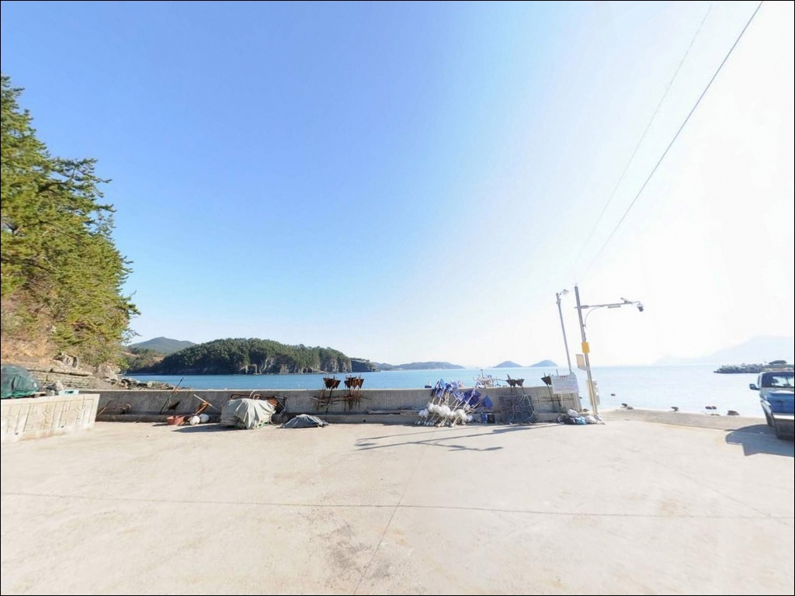
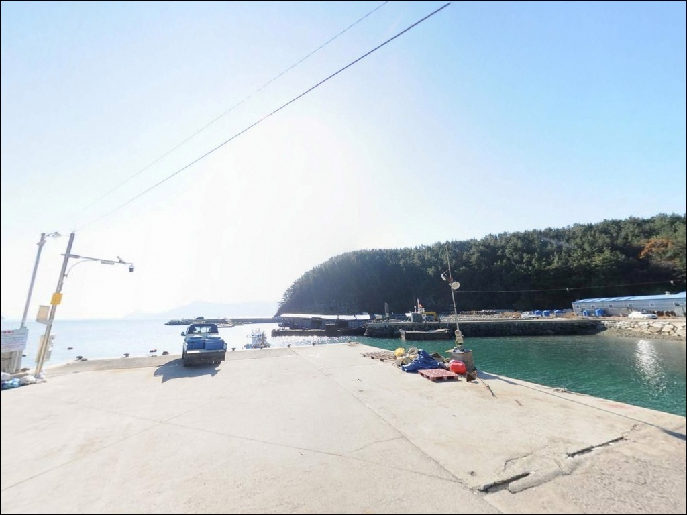

외항 조류에 찌 밀릴 때, 덕명항 조금 물돌이 타임에 노린 감성돔
이 페이지에는 광고(제휴 링크 포함)가 있으며, 광고 링크를 통해 구매하면 운영자가 판매 수익 또는 수수료를 받을 수 있습니다. 포인트 사진: 카카오맵 스카이뷰·로드뷰. 이 페이지의 지도·사진 이미지는 카카오맵의 실제 서비스 이미지와 다를 수 있습니다.


포인트 안내
덕명항
경남 고성군 하이면 덕명리 736-8
물때 확인 없이 사리 전후에 덕명항 외항 방향에 자리를 잡으면
조류가 너무 빠르게 흘러
찌가 순식간에 빠져나가거나
에기 컨트롤이 불가능해집니다.
방파제와 갯바위, 선착장이 함께 있는 구조라
자리 선택에 따라 낚시 여건이 크게 달라지는
포인트입니다.
이 글은 덕명항의 진입 동선,
4개 낚시 구역별 지형 여건,
차박 체류 조건,
방문 전 판단 기준에 집중합니다.
조황 단정이나 특정 어종 보장은
이 글의 범위에 포함되지 않습니다.

1. 진입 동선과 포인트 접근 조건
덕명항은 77번 국도에서
상족암군립공원 방향 이정표를 따라 진입합니다.
덕명마을 직전 구간은
왕복 1.5차로 내외의 해안 소로이며
경사는 완만하고 포장 상태는 양호한 편입니다.
대형 캠핑카나 대형 SUV는
회차 공간이 좁아 진입 전 도로 폭을 먼저 확인해야 합니다.
포인트 내 낚시 구역은 크게 4곳으로 나뉩니다.
A구역은 덕명마을 방파제 본체이며
외항과 내항을 가르는 핵심 발판입니다.
C구역은 마을 제방 쪽 갯바위 구간,
D구역은 수산회사 선착장 입구 공터로
도보 이동 후 갯바위가 넓게 펼쳐지는 자리입니다.
주차 1순위는 D구역 입구 공터이며,
C구역 도로변에 2~3대, A구역 진입 전 해안도로변에
소형 차량 1~2대 정도 댈 수 있습니다.
방파제 끝단까지 차량을 진입시키면
회차 자체가 어려워집니다.
D구역이나 C구역 근처에 세우고
도보로 이동하는 방식이 현실적입니다.

2. 차박 환경과 야간 체류 여건
덕명마을은 30~50가구 내외의 소규모 어촌입니다.
야간에는 차량 통행이 줄고
마을 중심부에는 가로등이 산발적으로 분포합니다.
방파제 끝단과 갯바위 구역은
조명이 없는 구간이므로
야간 낚시 시 헤드랜턴과 예비 조명은 필수입니다.
차박 공간으로 가장 현실적인 곳은
D구역 수산회사 선착장 입구 공터입니다.
마을 중심부보다 프라이버시 여건이 낫고
갯바위까지 도보 이동이 가능합니다.
다만 어민이 실제로 사용하는 항구이므로
어선 접안 구역과 어구 보관 공간에는 진입하지 않는 것이
기본 매너입니다.
덕명항은 상족암군립공원과 직접 인접해 있습니다.
군립공원 구역 경계 내에서는
지정 장소 외의 야영과 취사가
원칙적으로 허용되지 않습니다.
출발 전 고성군청이나 상족암군립공원 관리사무소에
사전 확인하는 편이 안전합니다.


3. 주변 편의시설 및 인프라 현황
덕명항 인근은 소규모 어촌 마을 구조입니다.
항 내 수산회사 선착장에 관련 시설 1곳이 운영 중이며,
상족암군립공원과 연결되는 해안누리길이
덕명항에서 맥전포항까지 3.5km 구간으로 이어집니다.
편의점·주유소·식당은
삼천포 방면으로 차량 10분 거리에 집중되어 있습니다.
77번 국도를 따라 서쪽(사천시 삼천포 방향)으로 이동하면
일상 소비 인프라를 해결할 수 있습니다.
출조 전 식수·얼음·여분 채비를
미리 갖추고 진입하는 편이
현장에서 불필요한 이동을 줄이는 방법입니다.
응급 상황 발생 시에는
삼천포 시가지 내 내과·응급의원까지
약 10~15분 거리에 있습니다.
섬이나 오지 포인트는 아니지만
야간 낚시 중 사고를 대비해
비상 연락처와 응급 경로는 미리 확인해 두는 편이 좋습니다.

4. 외항 조류가 강한 날, 이렇게 판단하십시오
덕명항에서 가장 먼저 확인해야 할 것은 물때입니다.
바다타임에서 고성 하이면 기준 물때를 확인하고
사리 전후 외항 조류가 강해지는 시간대를
파악한 뒤 출발 시각을 조율하는 것이
낚시 여건을 살리는 기본 전략입니다.
조금 전후나 물돌이 타임을 노리면
찌낚시와 에깅 모두 컨트롤이 수월해집니다.
기상 변화도 놓치지 않아야 합니다.
북서풍이 강한 날은 덕명리 해안이
직접 바람 영향권에 들어오는 경우가 있습니다.
해양기상정보포털에서 풍향·풍속·파고를
당일 아침 다시 한번 확인하는 것이
헛걸음을 막는 판단 기준이 됩니다.
C구역 갯바위와 D구역 선착장 주변은
수중 기복이 있고 여밭이 섞인 지형입니다.
밑걸림이 잦은 구간이 있으므로
여분 채비는 넉넉하게 준비하는 편이 좋습니다.
구명조끼와 미끄럼 방지 워킹화는
갯바위 진입 시 기본 장비입니다.

5. 지형 기반 낚시 여건 분석
덕명항은 구)덕명초등학교 남동쪽 돌출부와
덕명선착장 북동쪽 해안바위 돌출부 사이의
만입부를 수역으로 쓰는 내만형 소형 어항입니다.
방파제 외항은 조류 흐름이 직선으로 통과하며
들물·날물 모두 흐름이 살아 있는 구조이고,
내항은 비교적 잔잔한 정체 수역 성격이 강합니다.
수심은 방파제 발밑 기준 2~4m 내외이며,
원투로 30m 이상 날리면 5~7m 수준이 나오는 지형입니다.
C구역 갯바위권과 D구역 선착장 일대는
수중 기복이 있고 조류가 흐르는 구간이 형성되며,
여밭과 펄 저질이 혼합된 바닥 구조라
다양한 저서성 어종의 접근이 가능합니다.
북측으로는 상족암 갯바위권이
해안선상에서 직접 연결됩니다.
공룡발자국 화석이 있는 암반 지형이 발달해 있어
여밭 낚시 여건이 갖춰진 구간입니다.
이 포인트에서 기대해 볼 수 있는 어종은
감성돔, 볼락, 노래미, 붕장어, 도다리,
갑오징어, 무늬오징어, 농어, 갈치 등이며,
가을 이후 야간에는 갈치와 볼락의 비중이 높아지는 편입니다.
출조 전 최신 조황은 반드시 직접 검색해 확인하시기 바랍니다.


6. 포인트에 어울리는 낚시 스타일
덕명항에서 가장 잘 맞는 낚시는
릴찌낚시입니다.
C·D구역 갯바위 및 방파제 외항 콧부리 쪽
조류 흐름이 닿는 구간이 감성돔·볼락을
노리기 좋은 자리입니다.
항 입구 방향 조류를 흘려 보내는
흘림 낚시 방식이 이 포인트 구조에 잘 맞습니다.
에깅도 덕명항의 지형 조건과 잘 어울립니다.
봄~가을 시즌 방파제 외항 방향과 갯바위 경계부에서
갑오징어와 무늬오징어를 노릴 수 있으며,
이 일대 남해 내만 해역에서
에깅 조과가 꾸준한 구간으로 분류됩니다.
방파제 외항 턱 부근에서 문어 루어 낚시도
함께 시도해볼 수 있는 포인트입니다.
원투낚시는 방파제 초입 외항 방향과
C·D구역 갯바위 앞이 자리로 어울립니다.
도다리, 노래미, 붕장어, 쥐치류 등
바닥권 어종이 대상이며,
여밭이 섞인 구간에서는 밑걸림이 있으므로
채비 손실을 감안한 준비가 필요합니다.
볼락 루어는 야간 방파제 외항 어두운 구간과
갯바위 경계부가 자리로 적합합니다.

7. 대안 포인트와 플랜 B 동선
덕명항 자리 여건이 여의치 않을 때
가장 먼저 이동할 곳은
맥전포방파제입니다.
덕명항에서 약 7km 거리이며
고성군에서 규모가 가장 큰 방파제입니다.
외항 테트라포드 구간 발밑 수심이 5~6m,
원투 기준 8~9m로 깊으며
감성돔 릴찌낚시 1순위 포인트로
낚시인들이 즐겨 찾는 곳입니다.
맥전포방파제는 주차 공간이 넓어
여러 대가 동시에 사용할 수 있습니다.
야간 갈치 시즌에는 이쪽으로
이동하는 낚시인이 많아
덕명항보다 편의시설 접근성도 유사한 수준입니다.
삼천포 방면 동선과 동일하게 연결됩니다.
덕명항 북측 직결 구간인
상족암군립공원 갯바위권도
볼락과 감성돔 포인트로 활용됩니다.
자란만 내 동일 해역 포인트로는
두포리 방파제(475m)와
대땀 방파제(2.7km)가
덕명항과 유사한 낚시 여건으로 분포합니다.

방파제·갯바위·선착장을
한 번에 탐색할 수 있는 구조입니다
릴찌낚시, 에깅, 원투낚시를 상황에 따라 바꿔가며
공략하고 싶은 낚시인이라면
덕명항의 4구역 구조는
한 번 답사해 두기에 좋은 포인트입니다.
C·D구역 갯바위에서 상족암 방향까지
해안선이 이어지는 구간이라
자리를 고르는 재미도 있는 곳입니다.
반면 물때 확인 없이 사리 전후에 진입하거나,
북서풍이 강한 날 외항 자리를 고집하면
어떤 방식을 써도 조과를 기대하기 어렵습니다.
물때·기상·구역 선택,
이 세 가지를 갖추고 간다면
덕명항은 고성 남해안에서
효율적으로 공략할 수 있는 포인트입니다.
상족암군립공원과 해안누리길이 바로 옆에 있어
낚시 전후 잠깐 걸어볼 수 있는 여건도 갖춰져 있습니다.
조용한 어촌 포구에서 하룻밤 차박하며
아침 물때를 기다리는 스타일의 낚시 여행자라면
D구역 공터에 자리를 잡고
갯바위 탐색부터 시작하는 동선이
이 포인트를 가장 잘 활용하는 방법입니다.